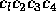

| Crazy Calculator |
The two properties of arithmetic operators which determine the order in which they are executed in an expression are their precedence levels and their associativities. Precedence levels determine the order in which operators with different precedence levels are executed. Associativities determine the order in which a repeated operator is executed. Left associative operators are evaluated left to right while right associative operators are evaluated right to left. Different operators with equal precedence levels are evaluated left to right. Examples:
In the Southeastern region of the planet ACM, a strange collection of dialects has resulted in the use of non-standard operators for the integer operations of plus, minus, times, and integer divide. The operations are the usual binary operations, but the symbols used, their precedences and their associativities, vary widely across the region. Your team is to write a program that will implement a simple integer calculator with operations "+", "-", "*", and "/" where "/" denotes integer division. The catch is, your calculator has to deal with all of the local dialects.
The input begins with a single positive integer on a line by itself indicating the number of the cases following, each of them as described below. This line is followed by a blank line, and there is also a blank line between two consecutive inputs.
The input for each case will contain 4 lines that describe the local symbol set
followed by 1 or more lines each containing an expression using the
local symbol set to be evaluated. The first four lines each contain a
four character string  beginning in column one, where:
The line
-@1R
means that the symbol @ will be used to denote minus which will be right associative and have precedence 1. The expression 5@3@1 under these circumstances will evaluate to 3.
For each input expression, your program must print one line containing
the expression with standard operators followed by a
space, an equal sign, and the result.
The outputs of two consecutive cases will be separated by a blank line.
1 +@1L -+3R *-2R //2R 1@1 5@5+4 2@3-12/6/5+3
1+1 = 2 5+5-4 = 6 2+3*12/6/5-3 = 14
The last expression, parenthesized to show you the order of execution is (2+((3*12)/(6/(5-3)))).
~@#$%^&*()_+=-{}[]:;|<>,.?/
and the four operators for the arithmetic operations are unique.